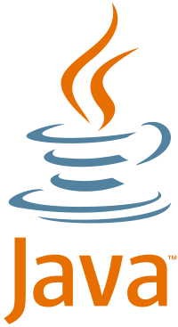
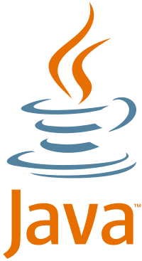
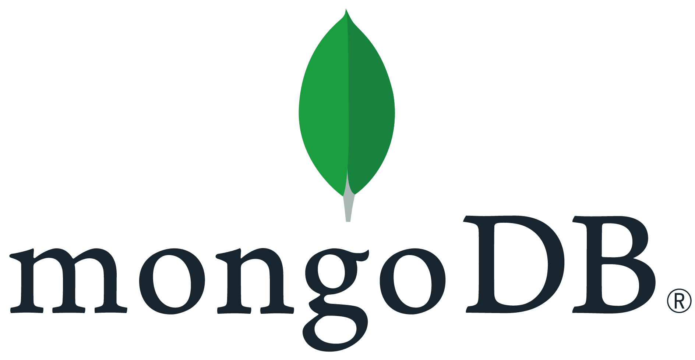
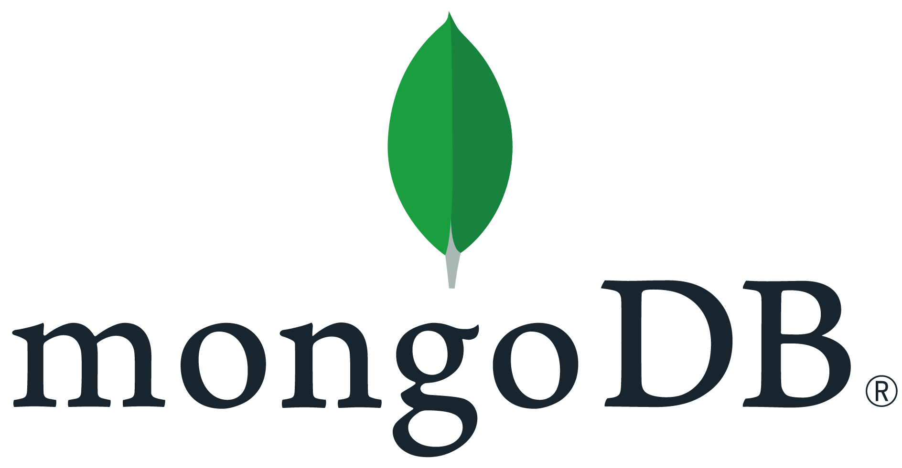

I'm a full-time student at the University of Helsinki. After studying mathematics as my major for two years, I switched my major to be computer science in 2021. I will complete my bachelor's degree in the autumn semester of 2022. After that, my plan is to continue to master's studies. In addition, I study part-time at the Sibelius Academy, majoring in viola.
My main focus is to build robust, straightforward and comprehensive programs and I always look forward to working in a developer team. I enjoy being challenged and engaged with projects that require me to work outside my comfort and knowledge set. What I can bring to a team, is continuous adaptation to varying circumstances and responsibility to disclose problems before it's too late. I find these qualities to be essential for a successful developer.
Below, I have programming projects I've made so far, and a few memorable moments from my career as a musician.


 



 
